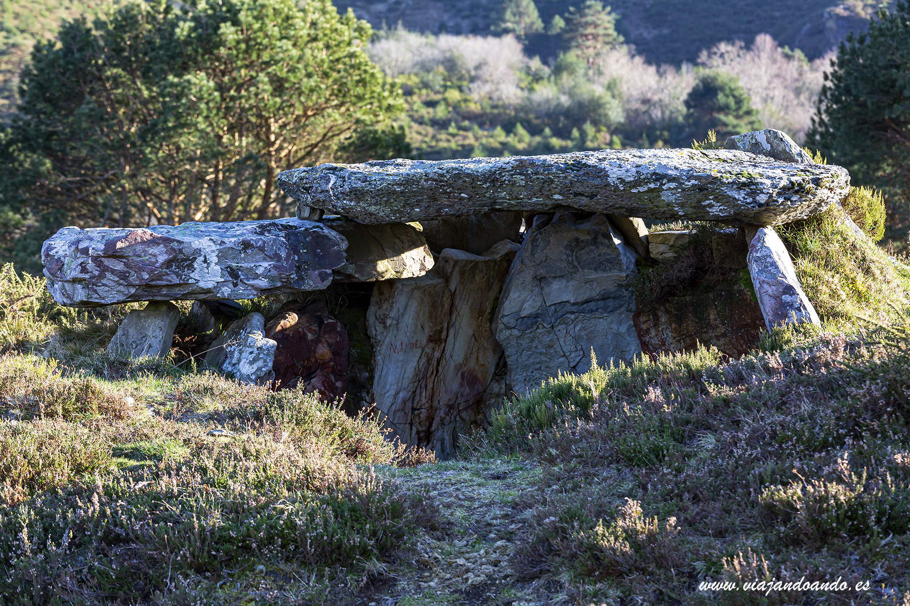
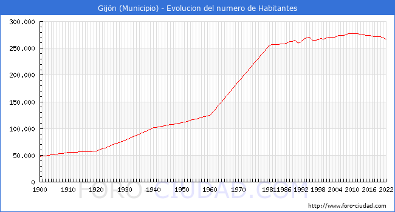
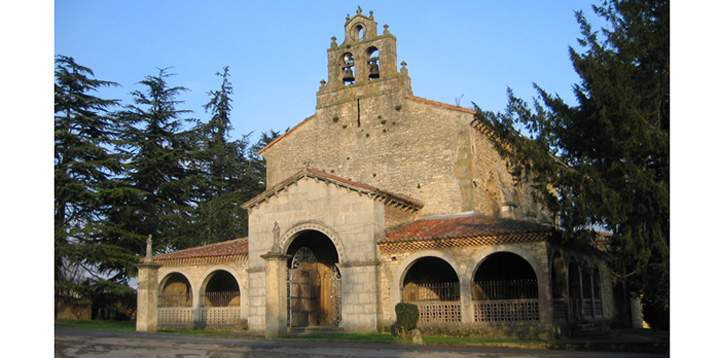

Indice
Historia
Prehistoria
Los más antiguos testimonios de presencia humana en lo que hoy conocemos como concejo de Gijón datan del Mesolítico y consisten en instrumentos de piedra llamados «picos asturienses», hallados en la desembocadura del río Piles y en Tremañes. Estas herramientas permitían arrancar de las rocas moluscos como las lapas, los cuales formaban parte de la dieta de los primeros habitantes de la zona.25 Más adelante, en el Neolítico, se construyeron en el Monte Deva una serie de túmulos (primitivos enterramientos) y en el Monte Areo un conjunto dolménico considerado como uno de los más importantes de la costa Cantábrica.26 En 1990, unas prospecciones arqueológicas permitieron sacar a la luz 30 dólmenes, repartidos en dos sectores diferentes: Los Llanos y Les Huelgues de San Pablo, que según algunos expertos están agrupados en un «cierto orden monumental». Sucesivas campañas arqueológicas han permitido el estudio de un túmulo en el área de San Pablo y otros dos en la zona de Los Llanos. De tipología diferenciada, dos de ellos presentan cámaras de planta rectangular y otro, trapezoidal con un pequeño corredor precediéndolo. Este último es un caso interesante, ya que no es frecuente encontrar dólmenes de corredor en el área del Cantábrico. Este conjunto dolménico está datado en el 5000 a. C. Estos monumentos megalíticos indicarían que en el actual concejo gijonés existía una importante población fija, que tenía como objetivo la demarcación del territorio que cada uno consideraba propio
Edad Antigua
No se tienen noticias de asentamientos permanentes en el concejo hasta la aparición de los castros. El más conocido de estos poblados fortificados es el situado en la Campa Torres (Noega), con su origen en los siglos VI y V a. C., poblado por astures de la gens de los cilúrnigos y posteriormente romanizado al tratarse de un perfecto candidato para acoger temporalmente efectivos militares tras la conquista.28 En cambio, algunos autores opinan que debió existir algún tipo de población de carácter autóctono en el lugar que ocupa actualmente la ciudad, aunque no existen datos fidedignos que apoyen estas suposiciones.29 El castro de Noega fue progresivamente abandonado como consecuencia de la fundación en el siglo i d. C. de un nuevo asentamiento romano a los pies del Cerro de Santa Catalina, en el actual barrio de Cimadevilla. Este se convirtió en un importante puerto estratégico en la ruta marítima del Cantábrico30 y un centro regional o caput ciutatis que alcanzó su esplendor en el Bajo Imperio. Las investigaciones arqueológicas realizadas en el casco urbano a partir de la década de 1980 han descubierto y documentado los restos de termas (siglo i a ii d. C.), murallas (siglo iii a iv), viviendas, aljibes y una fábrica de salazones, entre otros hallazgos. Entre los vestigios de ocupación romana encontrados en el concejo destaca una gran villa del siglo iv en Veranes que conserva la parte residencial o pars urbana y la de servicios o pars rustica. Sin embargo, la existencia de una ciudad ha sido cuestionada por algunos historiadores, quienes interpretan que el poblamiento romano del cerro se corresponde con una villa con unos baños asociados y que potenció su actividad económica con una pesquería. La fortificación se correspondería con su transformación en un puesto defensivo militar
Demografía
Según el padrón municipal de habitantes de 2019 (INE), el concejo tiene 271 780 habitantes, de los que 143 652 son mujeres y 128 128 son hombres. La parroquia de Gijón en sí cuenta con 257 441 habitantes.77 Gijón es la cuarta ciudad más envejecida de España, contando el 26,9% de la población con 65 años o más.
Evolución de la población
La población municipal creció de manera notable a lo largo del siglo XX, especialmente entre los años 1960 y 1980 periodo en el que se duplicó. A partir de la década de 1990 el crecimiento se estancó, al igual que sucedió a nivel nacional, si bien debido a la inmigración, proveniente tanto de otros concejos de Asturias como del resto de España, así como la inmigración del extranjero, el padrón volvió a crecer de forma significativa en los primeros años del siglo XXI. La siguiente gráfica refleja la evolución de los efectivos humanos de la ciudad durante la época estadística
Distribución parroquial
Según el nomenclátor de 2019, la población del concejo se reparte en 22 parroquias (entidades colectivas de población). Como consecuencia del proceso de recuperación de los topónimos tradicionales iniciado por el Gobierno del Principado de Asturias en 2004, actualmente los nombres oficiales de las parroquias del concejo son los asturianos.82 El número de parroquias ha descendido debido al crecimiento de la ciudad de Gijón desde los años 1960, que hizo que se incorporaran al núcleo urbano los núcleos de la parroquia de Tremañes, en el padrón de 1981, y los de Jove, Roces y Somió, en el de 1996. Todo ello a pesar de que las densidades de población de dichas parroquias en el momento de la incorporación no pudieran considerarse como urbanas y, por tanto, no justificaran su inclusión.
| Parametros Climáticos promedio de Gijón |
| Mes |
| Temp. máx. abs. (°C) |
| Temp. máx. media (°C) |
| Temp. media (°C) |
| Temp. mín. media (°C) |
| Temp. mín. abs. (°C) |
| Precipitación total (mm) |
| Días de precipitaciones (≥ 1 mm) |
| Horas de sol |